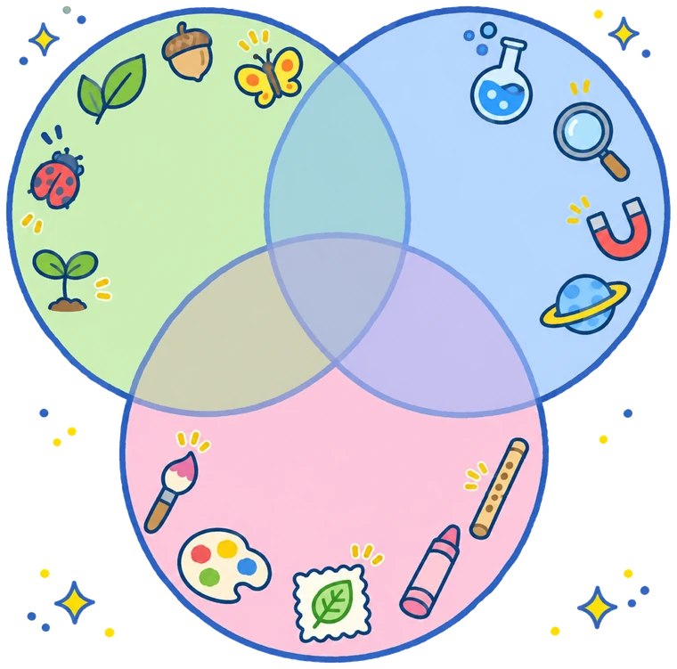
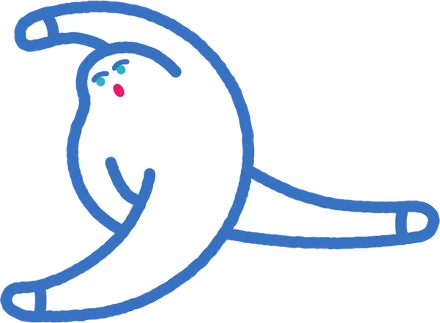
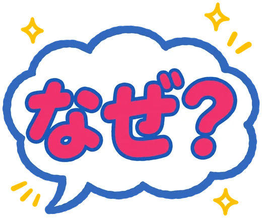
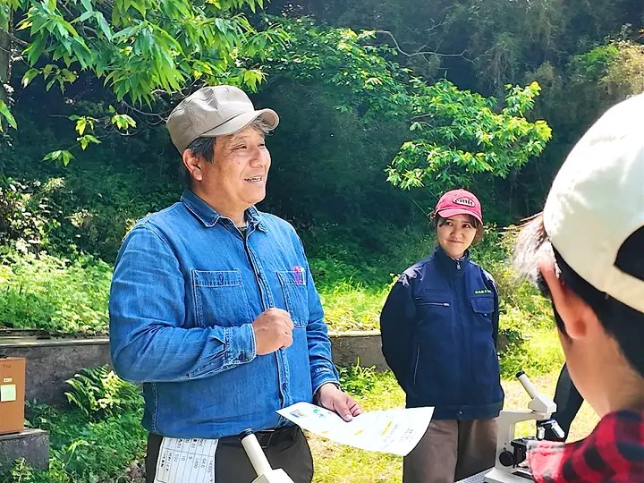
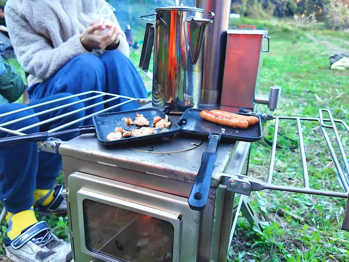
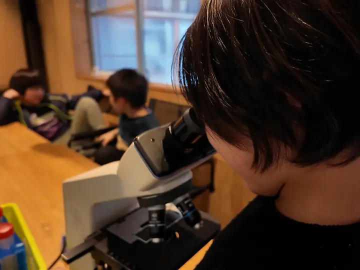
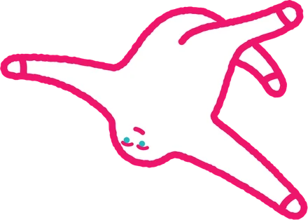

里山ラボの授業ふうけい写真をおすと、その授業のことが見られるよ。指でスライドもできます
ABOUT
サイエンス里山ラボって？

自然 科学 アート

自然×科学×アートを通じて
子どもの「なぜ？」を大切にしたい
普段の生活の中でふと出てくる色々な「なぜ？」を科学で考えてみよう、自然の中で実験してみよう。
自然の中で学ぶ体験型科学教室「サイエンス里山ラボ宗像」は、主に自然科学（物理科学、地球科学、生命科学）の分野を、大学の先生や企業・団体の方々から小学生向けに楽しく学ぶキッズスクールです。
-

01福岡県内の大学の先生から、宗像で科学授業が受けられる！
山にある農作物で電気はつくれるの？ 植物はなんで光合成をするの？ ナメクジの脳の仕組みや、里山と海に棲む微生物の違いなど。大学で専門の研究をしている先生たちから直接、楽しく学びます。
-

02授業のあとも、里山で家族と遊んだりデイキャンプできる！
授業が終わったあとや、それ以外の土曜日は家族でテントを張ってデイキャンプもOK。授業で習ったことを家族でさらに深掘りしたり、焚き火でマシュマロを焼いたり。めいっぱい遊んでください。
※火の取り扱いは、ご入会の際に利用規約にてご説明します。 -

03子どもたちの「なぜ？」を、自然を通じて科学から学びます
子どもたちの「なぜ？」は、興味や好奇心の種。自然環境をフィールドに、科学の視点でその種を育てます。自ら疑問を発見し、自ら考え、自ら学ぶ力を養います。
-
 04
04里山の自然をつかって、自分の手でアートをつくろう！
竹を切って音の出る楽器をつくったり、葉っぱをスタンプして手ぬぐいを染めたり、枝や草花で風にゆれるモビールをつくったり。里山の自然を素材に、自分の手を動かして作品をつくります。アートは、子どもの自由な発想や想像力、自分で表現して伝える力を広げてくれます。
CLASSES
授業
これからの授業と、これまでの授業です。新しい授業が決まったらどんどん追加していきます。
※諸事情により授業内容が変更になる場合があります。
TEACHERS
先生しょうかい
教えてくれるのは、大学の先生や、科学にまつわる企業・団体のみなさん。それぞれの専門分野を、小学生にもわかりやすく紹介・実験します。
MOVIES
授業の動画
これまでの授業をダイジェスト動画で。ページの中でそのまま見られます。
PLAY
おうちであそぶ・まなぶ
里山の自然や授業のふしぎを、ゲームやアプリでも。
HOW TO JOIN
参加方法・料金
- 1
LINEで友だち追加
サイエンス里山ラボの公式LINEを友だち追加してください。授業のお知らせも届きます。
- 2
LINEで申し込み
授業の「LINEで申し込む」を押すと、LINEで申込画面が開きます。会員・参加したことのある方は、来る人をえらぶだけ。はじめての方は、トークでお申し込みください。
- 3
当日、里山へ！
集合場所や持ち物は、LINEでくわしくご案内します。
会員
3,000円／回
＋年会費 1,000円／年（税込）
- 授業を優先的に受講できます
- 授業日以外も里山を使えます（デイキャンプ・焚き火など）
- 対象
- 小学校 3〜6 年生低学年のお子さんも、保護者付きであれば上のお子さんと参加できます（3人目から＋500円／人）。未就学のお子さんは授業には参加できませんが、帯同OK（無料）です。
- 日時
- 毎月1〜2回、主に土曜日 13:30〜（90分程度）授業の前後はデイキャンプOK。日程は授業一覧でご確認ください。
- 場所
- 宗像市大穂の里山光岡交差点より車で5〜10分ほど。くわしい場所はお申し込み後にお伝えします。
- 保護者
- 授業・デイキャンプとも、大人のご家族の同席が必要です。
- 講師陣
- 福岡県内の科学に携わる大学の先生方、科学に携わる民間企業の方々など
スマホのカメラで
読みとってね

CONTACT
お問い合わせ
授業の申し込みも、ご質問・取材・講師のご相談も、公式LINEで受け付けています。友だち追加して、トークからお気軽にどうぞ。
返信は、授業の準備などで少しお時間をいただくことがあります。
LINEをお使いでない方、企業・取材のご連絡はメールでも